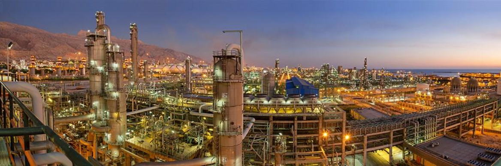

سایه رکود بر صنعت فولاد در پی
سیاستگذاریهای نادرست
فولاد یا پولاد (Steel) آلیاژی از آهن
است، که بین ۰٫۰۰۲ تا ۲٫۱
درصد جرم آن کربن است. خواص فولاد به کمک تغییر در درصد کربن، عناصر آلیاژی و عملیات
حرارتی قابل کنترل است. استفاده از فولاد به دلیل استحکام کشش نهایی زیاد و قیمت نسبتاً
پایین آن در ساخت صنایع مختلفی از قبیل ساختمان سازی، سازه های زیرساختی، ابزارها،
کشتیها، پلها قطارها،خودروها ، ماشین آلات،تجهیزات وسلاح های نظامی کاربرد گسترده
دارد.امروزه برای تولید فولاد (fe3c) از روشهای نوینی مانند،فولاد سازی به روش اکسیژن
قلیایی استفاده میشود، که علاوه بر کاهش قیمتها، منجر به افزایش خلوص فولاد تولیدی
نیز گردیدهاست. فولاد یکی از بیشترین مواد تولید شده توسط انسان است و سالانه تقریباً
بیش از ۱٫۶ میلیارد تن فولاد در سراسر جهان تولید میشود.استحکام فولاد با «میزان کربن
محلول» به شدت افزایش مییابد، اما از طرفی این افزایش استحکام باعث کاهش قابلیت
جوشکاری و افزایش احتمال شکست ترد میشود. استحکام فولادهای فریتی (فِرومغناطیس) رابطه
معکوسی با شکل پذیری دارد. تلفیق استحکام و شکلپذیری با پایدارسازی فاز آستنیت
(پارامغناطیس) در فولادهای مدرن چند فازی قابل بهبود است.به گزارش آهن آنلاین – با
افزایش هزینه تولید در بخش فولاد،قیمت آهن آلات در روند نزولی قرار گرفته است و میزان
معاملات محصولات این زنجیره هر هفته نسبت به هفته قبل کاهشی شده . باتوجه به محدودیت
نقدینگی نوردکاران تقاضا برای شمش کم شده و از این رو قیمت این محصول میانی نیز با افت
همراه است. از آنجایی که قیمت شمش مبنای قیمتگذاری تعیین شده قیمت گندله و آهن اسفنجی
نیز در کانال نزولی قرار گرفتهاند. بررسیهای معاملات محصولات زنجیره فولاد طی هفته
اخیر (۲۲ تا ۲۶ اردیبهشت ماه ۱۴۰۳) نشان میدهد که باتوجه به تقاضای اندک و معاملات کم
در رینگ فیزیکی رکود به این زنجیره بازگشته است.
به طوری که بیشتر خریدها در بازار صنعتی به صورت اعتباری انجام شده و این به معنای
محدودیت نقدینگی در واحدهای فولادی است. نوردکاران از خرید شمش به عنوان ماده اولیه
عقبنشینی کردند و فقط ۲۶ درصد شمشهای عرضه شده مورد معامله قرار گرفت. همچنین معاملات
۵۷ درصدی و ۱۲ درصدی آهن اسفنجی و میلگرد نیز در تالار معدنی بورس کالای ایران طی هفته
اخیر نشاندهنده وقوع یک رکود سنگین در این صنعت است. باوجود افزایش نرخ انرژی و هزینه
حمل به طوری کلی هزینه تولید که در سال جدید اتفاق افتاده است اما قیمت شمش نسبت به ۱۵
ماه گذشته تغییر چندانی نداشته است.
زمانی که محصولات فولادی در بازار داخلی تقاضا ندارند و صنعت به دام رکود میافتد
صادرات را میتوان به عنوان یک ناجی برای این بخش درنظر گرفت و تسهیل شرایط صادرات
میتواند از میزان فشار وارد شده به این صنعت بکاهد. این در حالی است که با وجود این
شرایط همچنان گره جدیدی به گرههای قبلی بخش فولاد افزوده میشود. به عنوان مثال
دستورالعمل جدید مبنی بر بازگشت ۱۰۰ درصد ارز حاصل از صادرات و فروش در بازار مبادله
آخرین تصمیم سیاستگذاران صنعت فولاد بوده که آسیب جدی به بدنه این بخش وارد خواهد کرد.
فاصله قیمتی ۳۶ درصدی نرخ حواله ارز در بازار مبادله و دلار در بازار آزاد موجب شده که
صادرات به عنوان تنها راه برونرفت از وضعیت رکود نیز با چالشهای جدی مواجه باشد و از
این رو صادرکنندهها تمایلی به صادرات محصولات فولادی ندارند.
همه آهن اسفنجی به فروش نرسید
در روز نخست هفته ۲۲ اردیبهشت ماه ۱۴۰۳، تالار صنعتی و معدنی بورس کالای ایران میزبان
بیش از ۲۰۷ هزار تن آهن اسفنجی بود که فقط ۱۱۸ هزار تن از این محصول مورد معامله قرار
گرفت. به عبارت بهتر در روز شنبه ۵۷ درصد عرضهها به فروش رسیدند که کمترین میزان طی
پنج هفته اخیر به حساب میآید. آهن اسفنجی با قیمت پایه ۱۲ هزار و ۶۸۴ تومان به ازای هر
کیلوگرم در رینگ فیزیکی عرضه شدند. باتوجه به آمار و ارقام میتوان دریافت که بازار آهن
اسفنجی نیز همچون سایر محصولات زنجیره فولاد در رکود فرو رفتهاند و ادامه این شرایط
همزمان با نزدیک شدن به فصل تابستان و آغاز محدودیتهای برقی برای واحدهای احیای مستقیم
برای ضرر این بخش باشد.
شمش مشتری واقعی ندارد
همچنین بررسی بازار فیزیکی محصولات فولادی نشان میدهد که روز دوشنبه ۲۴ اردیبهشت ماه
۱۴۰۳، بیش از ۲۵۸ هزار تن شمش عرضه شد که با احتساب معاملات مچینگ ۶۷ هزار تن معادل ۲۶
درصد از عرضهها مورد معامله قرار گرفت. این بازار نشان میدهد که در رینگ فیزیکی روز
دوشنبه فقط ۱۰ درصد معاملات به صورت نقدی انجام شده و مابقی به صورت اعتباری به فروش
رسیده است. این موضوع نشان میدهد که نوردکاران با معضلی به نام کمبود نقدینگی مواجه
هستند و این شرایط حاکم بر صنعت فولاد موجب شده تا وضعیت تولید برای واحدهای نورد سخت
رقم بخورد و بنابراین نوردکاران از خرید ماده اولیه مورد نیاز برای تولید میلگرد امتناع
کردند.
در روز معاملاتی دوشنبه قیمت پایه برای شمش در بازه قیمتی ۱۹ هزار و ۹۰۰ تومان تا ۲۱
هزار و ۵۰۰ تومان به ازای هر کیلوگرم مورد تعیین شد و در نهایت با توجه به تقاضای اندک
برای این محصول میانی زنجیره فولاد، شمشها با میانگین قیمت موزون ۲۰ هزار و ۸۴۰ تومان
به ازای هر کیلوگرم مورد معامله قرار گرفتند که کمترین قیمت شمش از هفته ابتدایی اسفند
ماه سال گذشته تا کنون به حساب میآید.
امتناع نوردکاران برای خرید شمش
بررسی تالار معدنی و صنعتی بورس کالای ایران در روز چهارشنبه ۲۶ اردیبهشت ماه نشان
میدهد که در این بازار بیش از ۳۴۲ هزار تن انواع میلگرد عرضه شده است که با احتساب
معاملات مچینگ فقط ۴۲ هزار تن از این میزان مورد معامله قرار گرفته است و یا به عبارت
بهتر در این رینگ ۱۲ درصد میلگردهای عرضه شده به فروش رسیده است. در بازار صنعتی روز
چهارشنبه میلگردهای مورد تقاضا با قیمت میانگین موزون ۲۴ هزار و ۲۵۹ تومان به ازای هر
کیلوگرم مورد معامله قرار گرفتند که این رقم کاهش ۲.۳ درصدی قیمت میلگرد را گزارش
میکند.به گزارش فولاد ایران،بر این اساس نرخ تعرفه باتری های لیتیوم یون مخصوص
خودروهای برقی امسال از ۷.۵ درصد به ۲۵ درصد افزایش می یابد، در حالی که نرخ تعرفه
باتری های لیتیوم یون غیر خودرو های برقی در سال ۲۰۲۶ از ۷.۵ درصد به ۲۵ درصد افزایش می
یابد. نرخ تعرفه قطعات باتری در سال ۲۰۲۴ از ۷.۵ درصد به ۲۵ درصد افزایش می یابد و نرخ
تعرفه گرافیت طبیعی و آهنرباهای دائمی نیز در سال ۲۰۲۶ از صفر به ۲۵ درصد افزایش خواهد
یافت. نرخ تعرفه برخی مواد معدنی حیاتی دیگر نیز امسال از صفر به ۲۵ درصد افزایش خواهد
یافت. از طرفی وزارت بازرگانی چین از دولت بایدن خواسته تعرفه های افزایش یافته را لغو
کند و آنچه را که «کار اشتباه» خوانده، اصلاح کند، چین «قاطعانه مخالف» تصمیم رئیس
جمهور آمریکا برای افزایش تعرفه ها بر واردات کالاهای چینی است و این اقدام را «دستکاری
سیاسی» می داند. بر اساس آمار، امریکا در سال گذشته میلادی ۴۲۷ میلیارد دلار کالا از
چین وارد کرد و ۱۴۸ میلیارد دلار به اقتصاد شماره ۲ جهان صادر کرده است..